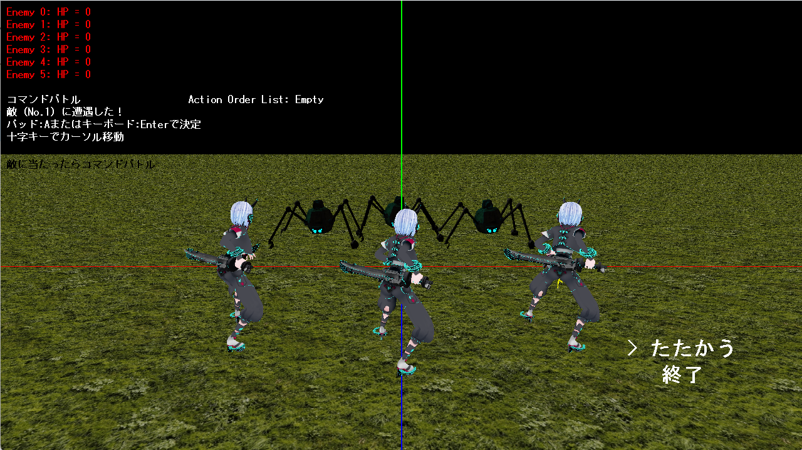

概要

ジャンル
ターン制バトルゲーム
制作期間
約2ヶ月間(2026/5/19-2026/6/30)
製作人数
1名
担当箇所
開発全般
開発環境
C++、スクリプト言語(Lua)、Visual Studio、DXライブラリ
ゲームプレイ動画
どんなゲーム？
3Dフィールドを探索し、敵と戦うコマンドバトルゲームです。
フィールド上で敵に接触するとバトル画面へ切り替わり、プレイヤーが「攻撃」を選択するとバトルが開始されます。
攻撃後は、プレイヤーと敵のスピードを比較し、スピードの高いキャラクターから順番に行動します。
フィールドでの探索と、行動順を意識したコマンドバトルを組み合わせたゲームとして制作しました。
アピールポイント
C++とLuaを連携したバトルシステム
C++とLuaを連携させ、バトル中の行動順を制御するシステムを実装しました。
キャラクターの情報や攻撃処理などゲームの基本部分はC++で管理し、Lua側ではキャラクターの速度をもとに行動順を決定し、順番に攻撃を実行する処理を担当させています。
また、Luaのコルーチンを利⽤して処理を一時停止・再開することで、各キャラクターが一定時間ごとに行動するバトルの進行を実現しました。
さらに、行動順や現在攻撃中のキャラクターをLua側で管理し、画面への表示も行っています。
C++とLuaで処理の役割を分けることで、ゲーム本体の処理とバトルの進行ロジックを分離する構成にしました。
コマンドの実行
デザインパターンを活用したゲーム設計
ゲームの拡張性や保守性を意識し、複数のデザインパターンを実際のゲーム開発に取り入れました。
特に、キャラクターの状態を管理するために、状態ごとに処理を分離できるステートマシンを自作しました。
状態を型として管理し、現在の状態に応じて処理を切り替えられるようにすることで、状態が増えた場合でも既存の処理への影響を抑えられる構造にしています。
また、オブジェクトの生成や管理、状態変更の通知などにもデザインパターンを活用し、それぞれの役割を分離しました。
パターンをそのまま当てはめるのではなく、ゲーム内の課題に合わせて設計することを意識しています。
Componentによる機能分離
キャラクターの機能を一つのクラスにまとめるのではなく、機能ごとに分離して扱えるComponent設計を実装しました。
体力・速度・ジャンプ・アニメーション・状態管理などをそれぞれ独立した機能として切り分け、必要な機能を組み合わせてキャラクターを構成できるようにしています。
また、Componentの生成や所有、更新などの管理処理も共通化し、各Componentの処理を統一して扱える構造にしました。
これにより、キャラクターごとに必要な機能を柔軟に組み合わせられるだけでなく、新しい機能を追加する際にも既存のキャラクター処理への影響を抑えられる設計を目指しました。
数学ライブラリの自作
ゲームに必要な数学処理への理解を深めるため、Vector4やMatrix4などの3D数学ライブラリを自作しました。
Vector4では、ベクトルの加減算や内積・外積、正規化、距離計算、線形補間などを実装し、Matrix4では平行移動・拡縮・回転やアフィン変換などの行列処理を実装しました。
さらに、自作した数学ライブラリとDXライブラリの型を相互変換する仕組みも実装し、モデルの位置・回転や衝突判定など、実際のゲーム処理で利用できるようにしました。
DXライブラリをそのまま利用するだけでなく、ゲームで扱うベクトルや行列の仕組みを自ら実装することで、処理の理解を深めることを意識しました。